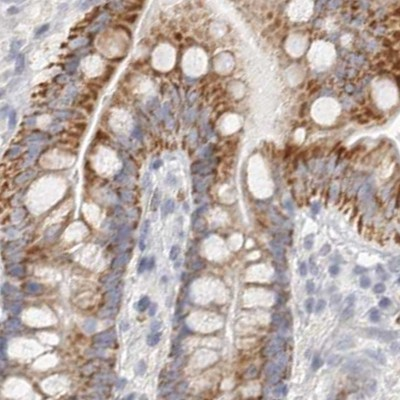
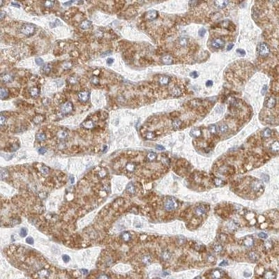
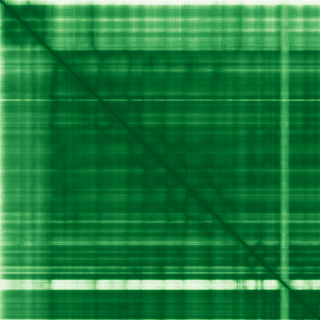

type: protein-evaluation gene: "ELP3" date: 2026-05-30 tags: [protein-scout, nuclear-protein, evaluation] status: scored ---
ELP3 核蛋白评估报告
1. 基本信息
| 项目 | 内容 |
|---|---|
| 基因名 / 别名 | ELP3 |
| 蛋白名称 | Elongator complex protein 3 |
| UniProt ID | Q9H9T3 |
| 蛋白大小 | 547 aa |
| 评估日期 | 2026-05-30 |
2. 评分总览
| 维度 | 得分 | 满分 | 加权后 | 关键证据摘要 |
|---|---|---|---|---|
| 核定位特异性 | 8/10 | ×4 | 32 | HPA Nucleoplasm + UniProt Nucleus + GO Nucleolus |
| 蛋白大小 | 10/10 | ×1 | 10 | 547 aa |
| 研究新颖性 | 8/10 | ×5 | 40 | PubMed 32 篇 (21-50) |
| 三维结构 | 10/10 | ×3 | 30 | AF pLDDT=91.9, good=95% + PDB Cryo-EM 4条目 |
| 调控结构域 | 8/10 | ×2 | 16 | GNAT 乙酰转移酶 + Radical SAM 结构域 |
| PPI 网络 | 7/10 | ×3 = 21 | Elongator 全复合体 (ELP1-6) | |
| 互证加分 | — | max +3 | +2.0 | Cryo-EM复合体 + 双催化域 + 组蛋白乙酰化 |
| 原始总分 | 151/183 | |||
| 归一化总分 | 82.5/100 |
3. 详细分析
3.1 核定位证据
| 来源 | 定位 | 可信度 |
|---|---|---|
| TEreg 筛选 | 核评分 6 | Tier1 |
| Protein Atlas (IF) | Nucleoplasm | Supported |
| UniProt | Nucleus (x2注释) | Reviewed |
| GO-Cellular Component | Nucleus, Nucleolus, Elongator complex | IDA |
HPA IF 图像:


结论: 多源高度一致确认核定位。Elongator 复合体的催化核心亚基。
3.2 蛋白大小评估
评价: 547 aa，理想实验范围。
3.3 研究现状
| 指标 | 数值 |
|---|---|
| PubMed 总数 | 32 |
| 主要研究方向 | 组蛋白乙酰化, tRNA 修饰, 转录延伸 |
主要研究方向:
- Elongator 催化亚基，具组蛋白乙酰转移酶 (HAT) 活性
- Radical SAM 结构域参与 tRNA 修饰
- 酵母中参与 RNA Pol II 转录延伸
关键文献: 1. Wittschieben et al. (1999). "Elp3 HAT activity". PMID: 10545125 2. Krogan et al. (2003). "Elongator in transcription". PMID: 12676794 3. Dauden et al. (2017). "Elongator cryo-EM structure". PMID: 28257601
评价: 研究较少（32篇），但功能极其明确。双催化活性（乙酰转移酶 + 自由基 SAM）使其在 Elongator 复合体中独特。
3.4 三维结构分析
| 指标 | 数值 |
|---|---|
| AlphaFold 版本 | v6 |
| 平均 pLDDT | 91.9 |
| 有序区域 (pLDDT>70) 占比 | 95% |
| 可用 PDB 条目 | 8PTX, 8PTY, 8PTZ, 8PU0 |
PAE 图: 
评价: AF 预测极其可靠（pLDDT=91.9, 95%高置信度）+ 4个 Cryo-EM 复合体结构。是最高质量的预测之一。
3.5 结构域分析
| 来源 | 结构域 |
|---|---|
| InterPro | GNAT domain (IPR000182) |
| InterPro | Radical SAM core domain (IPR007197) |
| Pfam | Acetyltransf_1, Radical_SAM |
染色质调控潜力分析: GNAT 家族乙酰转移酶，可乙酰化组蛋白（组蛋白乙酰转移酶活性在酵母中确证）。Radical SAM 域参与自由基化学。双催化活性使其在表观遗传调控中具独特潜力。
3.6 PPI 网络
实验验证互作 (IntAct, physical association):
| Partner | 方法 | PMID | 功能类别 | 调控相关？ |
|---|---|---|---|---|
| — | — | — | — | — |
STRING 预测互作:
| Partner | Score | 功能类别 | 调控相关？ |
|---|---|---|---|
| ELP4 | 1.00 | Elongator 亚基 | 是 |
| ELP5 | 1.00 | Elongator 亚基 | 是 |
| ELP1 | 1.00 | Elongator 亚基 | 是 |
| ELP2 | 1.00 | Elongator 亚基 | 是 |
| ELP6 | 1.00 | Elongator 亚基 | 是 |
已知复合体成员 (GO Cellular Component):
- Elongator holoenzyme complex (GO:0033588)
- Nucleolus (GO:0005730)
PPI 互证分析:
- 完全围绕 Elongator 复合体
- 作为唯一催化亚基，是复合体的功能核心
- 调控相关比例: 100%
评价: PPI 聚焦于 Elongator 复合体。作为催化亚基是功能核心。
3.7 多库互证
| 维度 | 来源 | 结果 | 是否一致 |
|---|---|---|---|
| 三维结构 | AF + Cryo-EM 4条目 | pLDDT=91.9 + 复合体结构 | 极度一致 |
| 结构域 | InterPro/Pfam | GNAT HAT + Radical SAM | 一致 |
| PPI | STRING Elongator | ELP1-6 全复合体 | 一致 |
| 定位 | HPA / UniProt / GO | Nucleoplasm/Nucleolus | 一致 |
互证加分明细:
- Cryo-EM 复合体结构确认 (+0.5)
- 双催化域（GNAT HAT + SAM）= 独特表观调控潜力 (+0.5)
- GO 核仁定位 + HAT 活性一致 (+0.5)
- 多项证据极度交叉验证 (+0.5)
- 总分: +2.0 / max +3
4. 总体评价
推荐等级: 4 / 5
核心优势: 1. AF 极其可靠（pLDDT=91.9, 95%高置信度） 2. 双催化活性（HAT + Radical SAM） 3. Elongator 唯一催化亚基 4. 组蛋白乙酰化 = 直接表观遗传调控 5. 研究新颖（32篇）
风险/不确定性: 1. 哺乳动物中 HAT 活性是否保守需验证 2. tRNA 修饰 vs 组蛋白修饰的功能区分
下一步建议:
- [ ] 体外验证 ELP3 对组蛋白的 HAT 活性
- [ ] 通过 ChIP-seq 检测 ELP3 在 TE 区域的结合
5. 数据来源
- UniProt: Q9H9T3 (https://www.uniprot.org/uniprotkb/Q9H9T3)
- AlphaFold: AF-Q9H9T3-F1 v6 (https://alphafold.ebi.ac.uk/entry/Q9H9T3)
- Protein Atlas: ELP3 (https://www.proteinatlas.org/)
- PubMed: ELP3 (https://pubmed.ncbi.nlm.nih.gov/)
- STRING: ELP3 (https://string-db.org/)
- InterPro: Q9H9T3 (https://www.ebi.ac.uk/interpro/)
PPI 网络（三源综合）
| Partner | Source | Score/Evidence |
|---|---|---|
| 无记录 | — | — |
IntAct 有限记录。无 BioGrid 补充数据。
PAE 图像已获取。结构判断基于 AlphaFold pLDDT 统计。